<!-- <h1 class="fragment" data-fragment-index="0" data-markdown> Enlightening the search for Dark Matter </h1> <h1 class="fragment fade-in" data-fragment-index="1" data-markdown> En<i>lightening</i> the search for Dark Matter </h1> --> <div class="r-stack"> <h1 class="fragment fade-out" data-fragment-index="0">Enlightening the search for Dark Matter </h1> <h1 class="fragment current-visible" data-fragment-index="0">En<i>light</i>ening the search for Dark Matter </h1> </div> <br> <div class="r-stretch"></div> ## Benjamin M. Roberts <br> ### School of Mathematics and Physics, ### University of Queensland, Australia <br> <br> <img src="img/uq-logo.svg" width="30%"> <br><br>
# The Standard Model + General Relativity <br> <div style="text-align: center; float: left; width: 50%"> <img src="https://upload.wikimedia.org/wikipedia/commons/2/2b/Standard_Model_of_Elementary_Particles_dark.svg" width="95%"> <font size="3"> Credit: Cush [Wikimedia Commons]</font> </div> <div style="text-align: left; float: right; width: 47%"> <h2>Tested with extraordinary precision</h2> <br> <h3> • e.g., electron magnetic moment, Higgs boson</h3> <h3> • gravitational lensing, gravitational waves</h3> <br><br><br> <h2>However...</h2> <br><br><br> <div class="fragment"> <h2>Several deep inconsistencies</h2> <h2>with the observed universe</h2> </div> <!-- <p data-markdown>• Tested across vast scales with extreme precision</p> <br> <p data-markdown>• This is my first right element</p> --> </div>
# Unexplained mysteries <br> <div style="text-align: center; float: left; width: 70%"> <div class="fragment" data-fragment-index="0" style="text-align: left;" data-markdown> <h2>Why is there so much more matter than anti-matter?</h2> <h3> • CP-violation in the Standard Model is too small</h3> </div> <br> <div class="fragment" data-fragment-index="1" style="text-align: left;" data-markdown> <h2>Quantum theory for gravitation?</h2> </div> <br> <div class="fragment" data-fragment-index="2" style="text-align: left;" data-markdown> <h2>No explanation for dark energy</h2> <h3> • Explain accelerated expansion of universe • Cosmologists: Why is Λ so large? • Particle theorists: Why is Λ so small? </h3> </div> <br> <div class="fragment" data-fragment-index="3" style="text-align: left;" data-markdown> <h2>No explanation for dark matter...</h2> </div> </div> <div style="text-align: left; float: right; width: 30%"> <br><br><br><br><br><br> 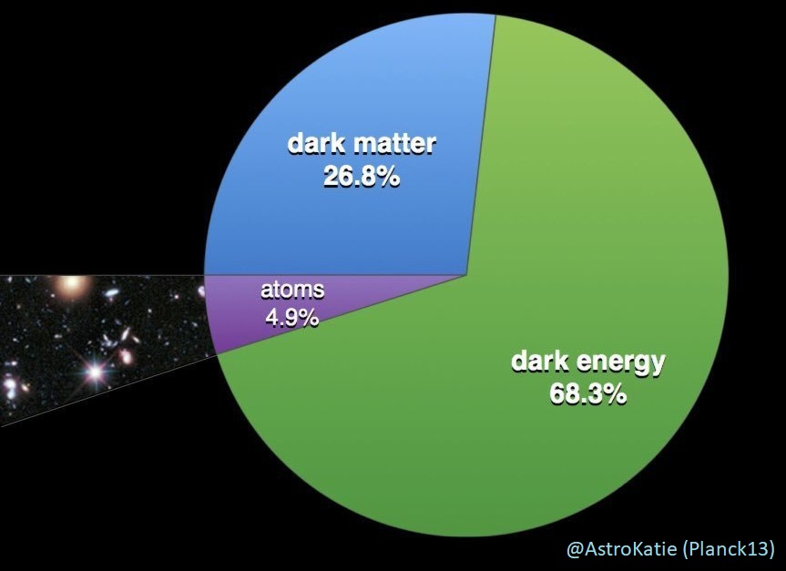 </div>
# Focus: dark matter <br> <div style="text-align: center; float: left; width: 35%"> <br><br><br> <h3>Coma Cluster</h3> <br> <img src="https://upload.wikimedia.org/wikipedia/commons/7/7d/Ssc2007-10a1.jpg" width="95%"> <font size="3"> Sloan Digital Sky Survey + Spitzer Space Telescope [NASA / JPL-Caltech / L. Jenkins]</font> </div> <div style="text-align: left; float: right; width: 47%"> <h2>First major hints: galaxy clusters</h2> <br> <h3>Fritz Zwicky: clusters too fast. <br> • Termed phrase "dark matter"</h3><br> <p>(And some even earlier hints)</p> <br> <div class="fragment"> <h3>Then: Vera Rubin, along with Kent Ford</h3> <br> <img src="img/vera-rubin.jpg" width="60%"><br> <font size="3"> [AIP Emilio Segrè Visual Archives, Rubin Collection] </font> </div> </div>
# Galactic Rotation Curves ## _all_ galaxies: stars move faster (left) than predicted (right) <video width="80%" controls playsinline autoplay muted loop> <source src="https://upload.wikimedia.org/wikipedia/commons/4/4c/Comparison_of_rotating_disc_galaxies_in_the_distant_Universe_and_the_present_day.webm" type="video/webm"></video><br> <font size="3">[ESO/L. Calçada, Creative Commons]</font>
# Galactic Rotation Curves <div style="text-align: center; float: left; width: 70%"> <br><br> <img src="https://upload.wikimedia.org/wikipedia/commons/c/cd/Rotation_curve_of_spiral_galaxy_Messier_33_%28Triangulum%29.png" width="95%"><br> <font size="3">[Mario De Leo, Wikimedia Commons]</font> </div> <div style="text-align: left; float: right; width: 30%"> <br><br> <h2>Missing Matter?</h2> <br> <p data-markdown>• Not a small correction</p> <br> <p data-markdown>• 80 - 95% of mass is "missing"</p> <br> <p data-markdown>• Implies <font color="orange">dark matter</font></p><br> \[a = \frac{G \, [M(r) + {\color{orange}\delta M(r)}]}{r^2} \] <br> <p data-markdown class="fragment fade-in">• ... or <font color="green">modified gravity</font><br><br> \[a = \frac{[G + {\color{green}\delta G(M,r)}] \, M(r)}{r^2} \] </p> <br> </div>
# Bullet Cluster <div style="text-align: left; float: left; width: 65%"> <br> <!-- <img src="https://upload.wikimedia.org/wikipedia/commons/e/ea/Bullet_cluster.jpg" width="90%"><br> <font size="3">Chandra X-ray Observatory [NASA]</font> --> <div class="r-stack"> <div class="fragment fade-out" data-fragment-index="0"> <img src="https://upload.wikimedia.org/wikipedia/commons/e/ea/Bullet_cluster.jpg" width="100%"><br> <font size="3">Chandra X-ray Observatory [NASA]</font> </div> <div class="fragment fade-in" data-fragment-index="0"> <img src="https://upload.wikimedia.org/wikipedia/commons/a/a8/1e0657_scale.jpg" width="90%"> <font size="3">NASA/CXC/M. Weiss - Chandra X-Ray Observatory</font> </div> </div> </div> <div style="text-align: left; float: right; width: 35%"> <br> <h3>• Colliding galaxy clusters ~ 4 Gyr</h3> <br> <h3>• X-ray emission image:<br> distribution of gas (baryons)</h3> <br> <br> <div class="fragment fade-in" data-fragment-index="0"> <h3>• Composite image: X-ray + lensing</h3> <br> <h3>• Pink = gas (X-ray)</h3> <h3>• blue = mass (gravitational lensing)</h3> <br> <h3 class="fragment fade-in" data-fragment-index="1"> • Frictionless dark matter: <br> passes straight through </h3> </div> </div>
# Cosmic Microwave Background (After removal of doppler dipole) <img src="img/CMB.png" width="80%"> <br> <h3 class="fragment fade-in"> • Temperature anisotropies (scale + distribution) <br> very sensitive to distribution of regular and dark matter </h3>
# Cosmic Microwave Background <iframe width="100%" height="70%" data-src="https://chrisnorth.github.io/planckapps/Simulator/"> </iframe> Credit: Chris North (Cardiff U.) - <a href="https://chrisnorth.github.io/planckapps/Simulator/"> chrisnorth.github.io/planckapps/Simulator</a> <br><br>
# Dark Matter: What we don't know <br> ## ... everything else <br> <!-- 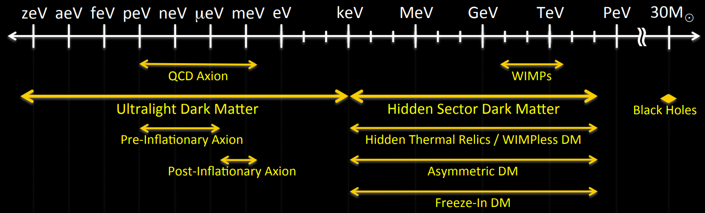 --> <div class="r-stack"> 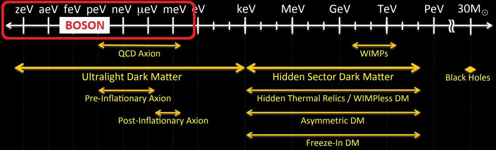 </div> <font size="3">US "Cosmic Visions" report [arXiv:1707.04591]</font> <br> <br> ### • Possible mass range: 90 orders of magnitude! ### • Fundamental particle: 50 orders (de Broglie to Planck) <br> ### • Vast majority of focus on WIMPs, but field is very wide
# WIMP miracle <!-- <div class="r-stack"> </div> <div style="text-align: center; width: 50%"> <img src="img/Feynman.png" width="85%"> </div> --> <div style="text-align: left; float: left; width: 30%"> <br><br> <img src="img/Feynman.png" width="95%"> <br><br> <h3> • Early universe: hot and dense</h3> <h3> DM + SM in thermal equilibrium</h3> <br> <h3 class="fragment fade-in" data-fragment-index="0"> • Universe cools: <br> Boltzmann suppression </h3> <br> <h3 class="fragment fade-in" data-fragment-index="1"> • Universe expands: <br> Shuts off annihilation </h3> <!-- <br> <h3 class="fragment fade-in" data-fragment-index="2"> • Begins in thermal equilibrium </h3> --> </div> <div style="text-align: center; float: right; width: 65%"> <div class="r-stack"> <img class="fragment fade-in" data-fragment-index="0" src="img/YDM/Yeq.png" width="90%"> <img class="fragment fade-in" data-fragment-index="1" src="img/YDM/YDM1.png" width="90%"> <img class="fragment fade-in" data-fragment-index="2" src="img/YDM/YDM2.png" width="90%"> </div> <h3 class="fragment fade-in" data-fragment-index="3"> • Weak interaction ($G_F \simeq 10^{-5}\,{\rm GeV}^{-2}$): new physics scale<br> • $m_{\rm weak} \simeq 100\,{\rm GeV}$ <br> </h3> <h3 class="fragment fade-in" data-fragment-index="4"> • $\langle\sigma v\rangle_{\rm weak} \simeq 3\times10^{-26}\,{\rm cm}^3/{\rm s}$ !!! </h3> </div>
# WIMP Searches: XENON <div style="text-align: left; float: left; width: 60%"> <div class="r-stack"> <div class="fragment fade-out" data-fragment-index="1"> <br><br><br> <img src="img/Feynman.png" width="65%"> <br><br> <h3 class="fragment highlight-red" data-fragment-index="0">• Direct detection (scattering)</h3> <h3>• Indirect detection (annihilation)</h3> <h3>• Collider searches (production)</h3> </div> <div> <div class="fragment fade-in" data-fragment-index="1"> <br> <h3>Excluded cross-section for WIMPs:</h3> <img src="img/WIMP-constraints.png" width="100%"> </div> <h3 class="fragment fade-in" data-fragment-index="2"> • Mass below nuclear mass: energy threshold </h3> <h3 class="fragment fade-in" data-fragment-index="2"> • High mass: fewer particles </h3> </div> </div> </div> <div style="text-align: center; float: right; width: 40%"> 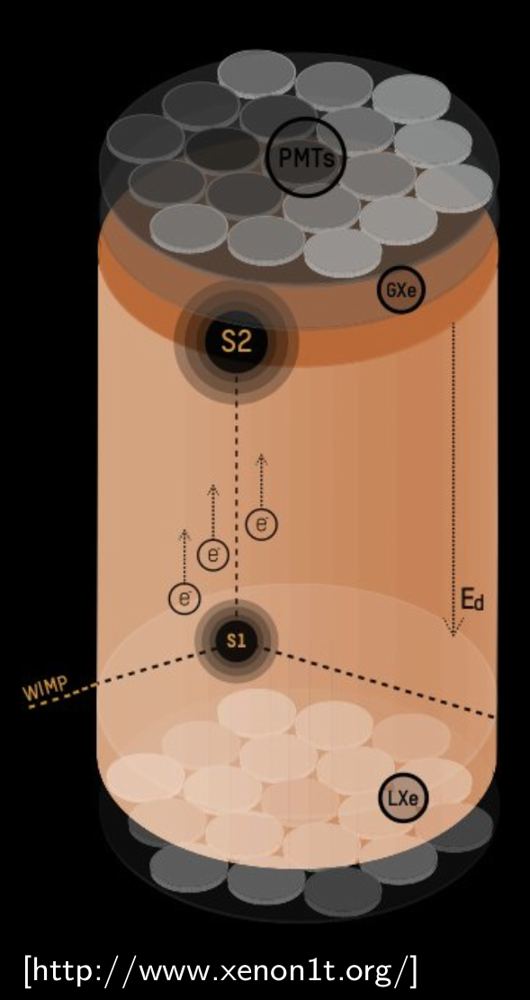 </div>
# En*light*ening the search for Dark Matter? ## Atomic Physics! <br> <div style="text-align: center; float: left; width: 60%"> <div class="fragment" data-fragment-index="0" style="text-align: left;" data-markdown> <h2> Mass drops below nuclear mass:</h2> <h3> • No nuclear recoils • Instead: electron recoils + ionisation</h3> </div> <br> <div class="fragment" data-fragment-index="1" style="text-align: left;" data-markdown> <h2> Mass drops below electron mass:</h2> <h3> • No electron recoils • Instead: absorption (dark photoelectric effect)</h3> </div> <br> <div class="fragment" data-fragment-index="2" style="text-align: left;" data-markdown> <h2> Mass drops below eV:</h2> <h3> • Classical DM field • Quantum sensing (atomic clocks)</h3> </div> <br> </div> <div style="text-align: center; float: right; width: 40%"> <br> <br><br> <div class="r-stack"> <div class="fragment" data-fragment-index="2"> 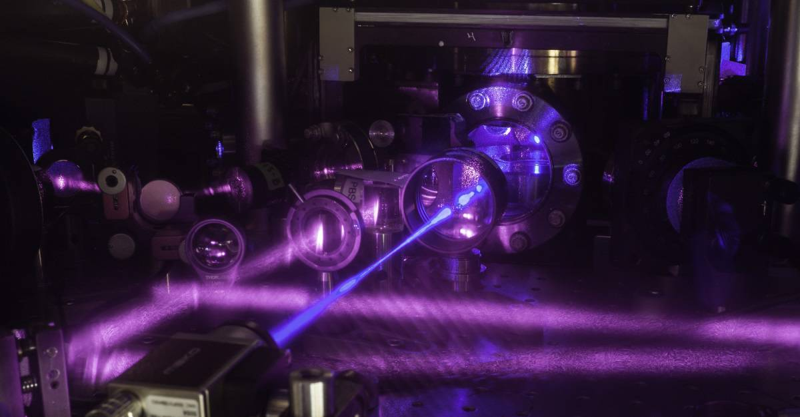<br> <font size="3">[JILA]</font> </div> <div class="fragment" data-fragment-index="3"> 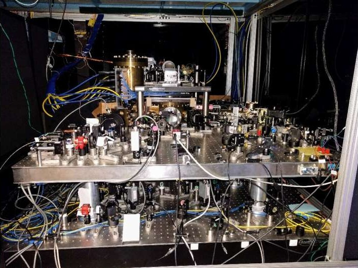<br> <font size="3">[Ye/UCBolder]</font> </div> </div> </div>
# Light "WIMPs": electron ionisation <div> <br> <div style="text-align: center; float: left; width: 40%"> 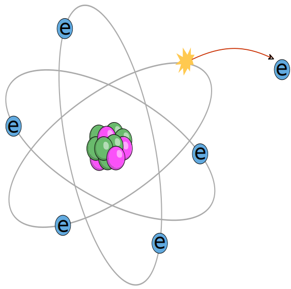<br> <font size="2">[nagwa.com/]</font> </div> <div style="text-align: center; float: right; width: 60%"> <br> <h2>Mass drops below nucleus: no nuclear recoils</h2> <br> <h2>Instead: electron recoils - ionisation $R\propto K$</h2> <br>  </div> </div> <div class="r-stretch"></div> * Ashlee R. Caddell, BMR, [arXiv:2305.05125](http://arxiv.org/abs/2305.05125) * BMR, V. V. Flambaum, [Phys. Rev. D **100** 063017 (2019)](https://link.aps.org/doi/10.1103/PhysRevD.100.063017) * BMR, Flambaum, Gribakin, [Phys. Rev. Lett **116** 023201 (2016)](http://link.aps.org/doi/10.1103/PhysRevLett.116.023201)
# Light "WIMPs": electron ionisation <div> <div style="text-align: left; float: left; width: 60%"> <br> <br> <img src="img/ampsci.png" width="100%"> </div> <div style="text-align: center; float: right; width: 40%"> <br> <h2>Can you test it?</h2> <div class="fragment fade-in"> <h3>Yes! Electron-impact ionisation</h3> 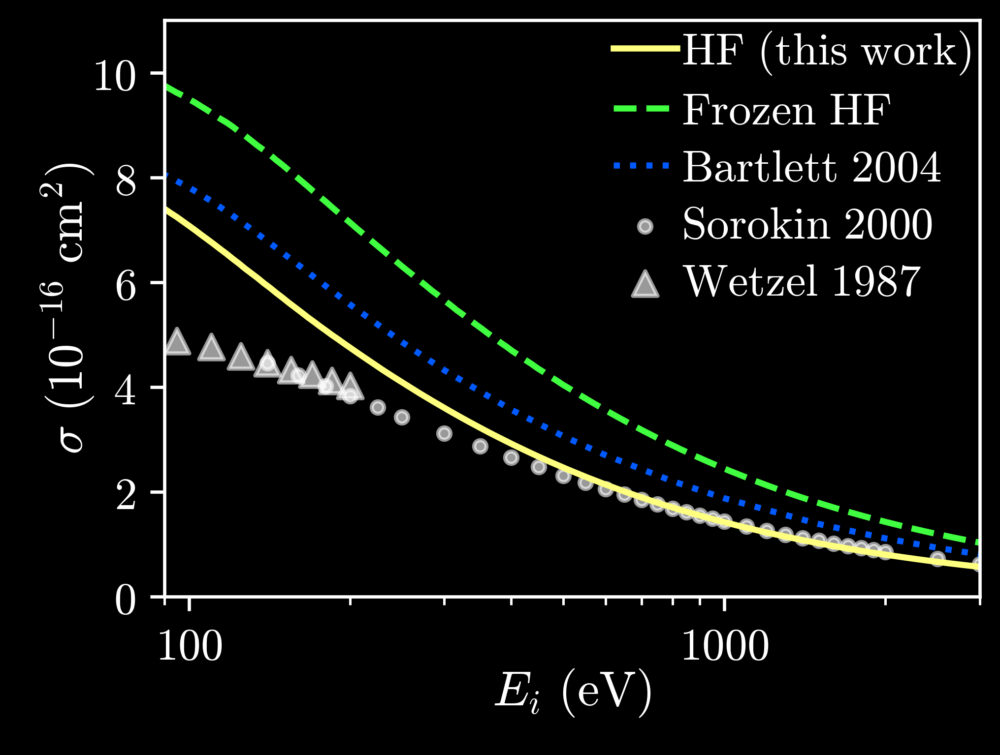 <h3>Better than dedicated calculations</h3> </div> </div> </div> <br> <div class="r-stretch"></div> <br> * PhD student: Ashlee Caddell - [arXiv:2305.05125](http://arxiv.org/abs/2305.05125)
# Light and Ultralight Dark Matter <br><br> $$ \Huge \rho_{\rm DM}\simeq 0.3 ~ \frac{\rm GeV}{{\rm cm}^3} $$ <br> ## Mass decreases $\implies$ number density increases: ## Classical boson field (e.g., axions, scalars) <br> <div style="text-align: left; float: right; width: 70%"> <div class="fragment fade-in"> <h3> 1. No interaction: oscillation: $\phi = \phi_0 \cos(m_\phi t)$ </h3> \[\phi_0^2\propto \rho_{\rm DM}\] </div> <h3 class="fragment fade-in"> 2. Interactions: clumps </h3> <br> <h3 class="fragment fade-in"> 3. Also: constant build-up (local over-densities) </h3> </div>
# Atomic Clocks 101: <br> <br> <br> ### Best clocks approach accuracy: $\delta f/f \sim 10^{-20}$ <br> <br> <div class="fragment fade-in" style="text-align: center; float: left; width: 32%"> 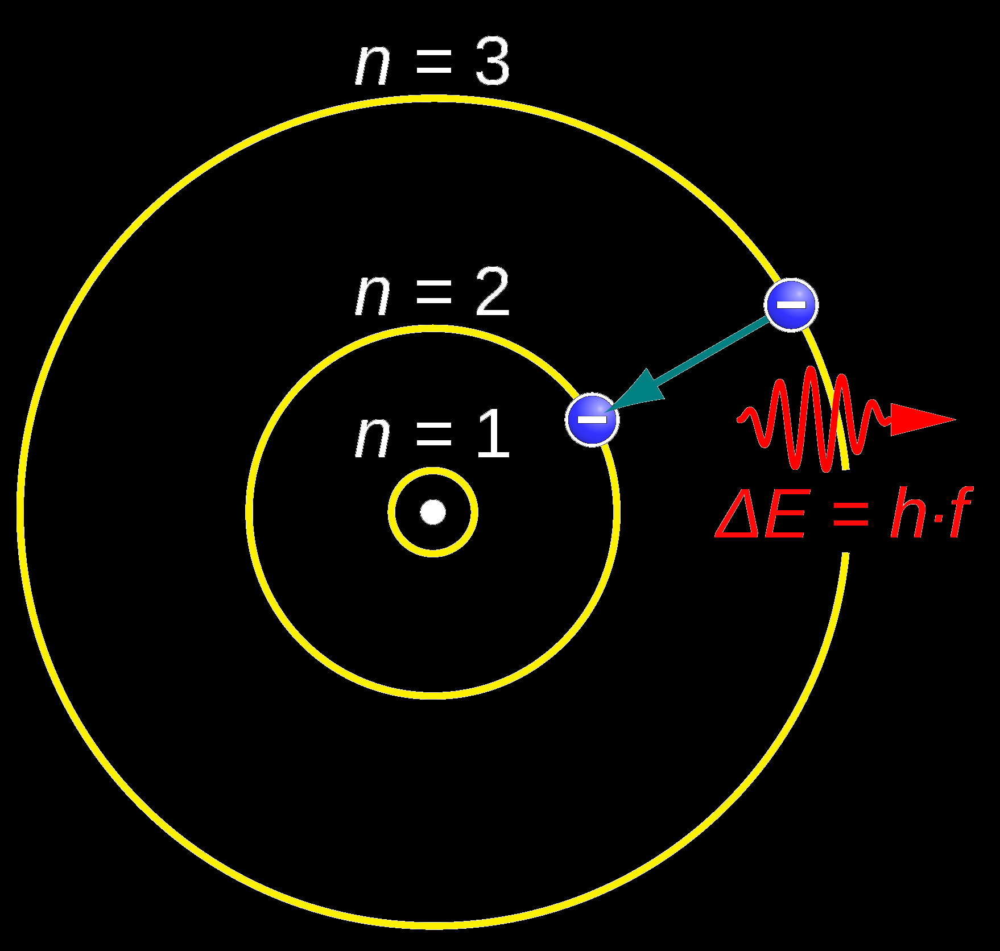<br> <font size="3"> JabberWok [Wikimedia Commons]</font> <br> <h3> Atomic transition: "perfect*" frequency reference </h3> </div> <div class="fragment fade-in" style="text-align: center; float: left; width: 32%"> <img src="img/Wcislo2016.png" width="95%"> <font size="3"> Wcislo, Science 2016</font> <br> <h3> Lock frequency of oscillator to atomic transition </h3> </div> <div class="fragment fade-in" style="text-align: center; float: right; width: 32%"> 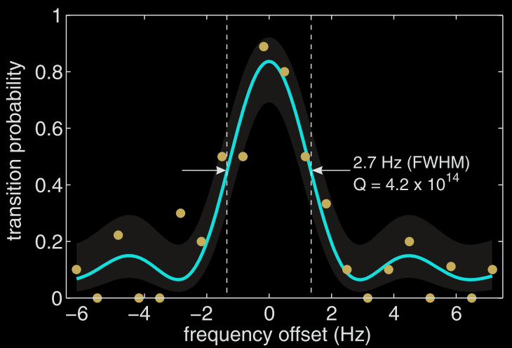 <font size="3"> Choi, Phys. Rev. Lett. 2018</font><br> </div>
# Effective variation of fundamental constants
# Oscillating signals
# Transient Signals
# GPS.DM <!-- loop --> <video width="50%" data-autoplay muted> <source src="img/GPSDM.mp4"></video>
# European Fibre-linked network
# Constant background 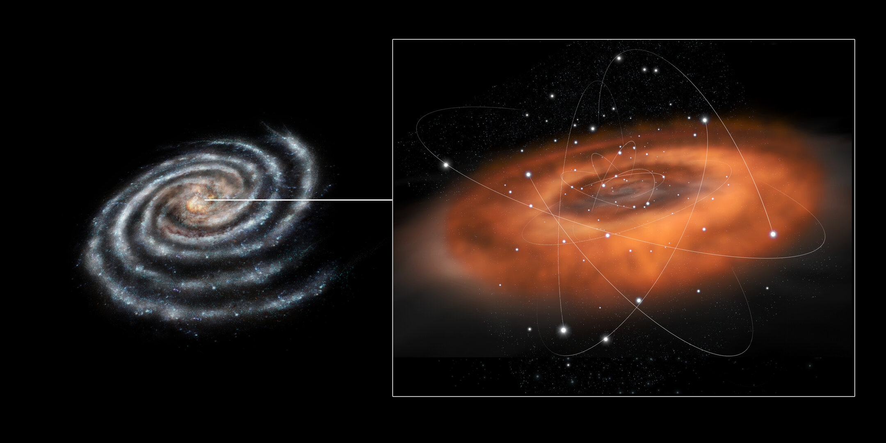